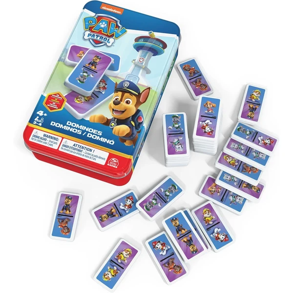
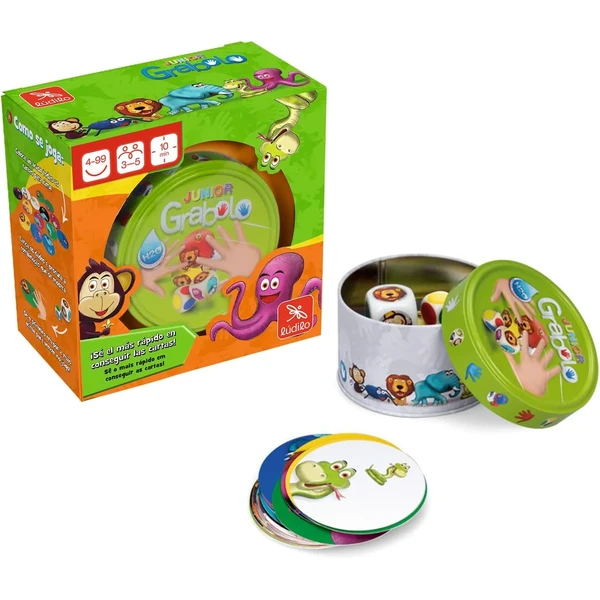
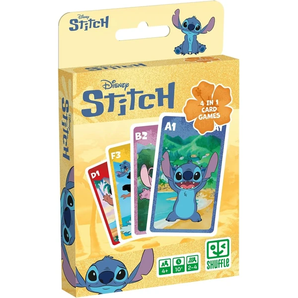
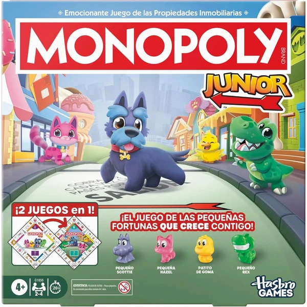

UNO Junior Mattel Games
Una versión simplificada del clásico UNO con dibujos de animales en lugar de números, pensada para que los más pequeños empiecen a jugar a las cartas. Incluye tres niveles de dificultad progresiva.
⭐ ¿Por qué nos gusta?
- ✔ Cartas con animales, sin necesidad de saber números.
- ✔ Tres niveles de dificultad para ir subiendo el reto.
- ✔ De 2 a 4 jugadores, ideal para toda la familia.
💬 Lo que más destacan las familias
Lo que más suele gustar es que los niños pueden jugar de verdad sin frustrarse, gracias a que los animales sustituyen a los números. Los tres niveles de dificultad también ayudan a que el juego siga interesando según van creciendo.
Ver en Amazon

Spin Master Games Dominó Patrulla Canina
Un dominó infantil con 28 fichas de los personajes de la Patrulla Canina, guardado en una práctica caja de metal, con reglas sencillas de unir fichas iguales.
⭐ ¿Por qué nos gusta?
- ✔ Temática Patrulla Canina, muy popular a esta edad.
- ✔ Caja de metal para guardar y transportar.
- ✔ Reglas sencillas, fáciles de explicar.
💬 Lo que más destacan las familias
Muchos padres coinciden en que la temática de la Patrulla Canina es justo lo que hace falta para que quieran jugar una y otra vez a un juego tan sencillo como el dominó. La caja de metal también aguanta bien el uso diario.
Ver en Amazon

Ravensburger Mini Memory Princesas Disney
Un juego de memoria con 48 cartas ilustradas con las princesas Disney, pensado para estimular la memoria visual y la concentración. Reglas sencillas: encontrar las parejas iguales.
⭐ ¿Por qué nos gusta?
- ✔ Ilustraciones de princesas Disney muy atractivas.
- ✔ Estimula memoria visual y concentración.
- ✔ De 2 a 6 jugadores, formato compacto.
💬 Lo que más destacan las familias
Una de las cosas más comentadas es lo motivadas que se ponen las niñas al ver a sus princesas favoritas en las cartas mientras juegan a encontrar parejas. Se nota además que la memoria visual mejora con las partidas.
Ver en Amazon

Dobble Kids
Una versión infantil del popular juego de reflejos Dobble, con cartas de animales y menos símbolos por carta para adaptarse a los más pequeños. Incluye cinco variantes de juego distintas.
⭐ ¿Por qué nos gusta?
- ✔ Cinco mini-juegos en una sola caja.
- ✔ Partidas rápidas, de unos 15 minutos.
- ✔ De 2 a 8 jugadores, ideal para grupos.
💬 Lo que más destacan las familias
Los compradores valoran especialmente lo rápidas que son las partidas, ideales para encajar entre otras actividades sin perder la atención de los niños. También gusta que se pueda jugar entre hermanos de edades distintas sin que nadie quede fuera.
Ver en Amazon

Ludilo Grabolo Jr
Un juego de rapidez y observación en el que hay que ser el primero en coger la carta que coincide con la combinación de color o animal que indican los dados. Partidas de unos 10 minutos.
⭐ ¿Por qué nos gusta?
- ✔ Partidas rápidas, de unos 10 minutos.
- ✔ De 3 a 5 jugadores, ideal en familia.
- ✔ Desarrolla rapidez de observación y concentración.
💬 Lo que más destacan las familias
Entre los comentarios más habituales aparece lo animadas que se ponen las partidas, ya que los niños se lo toman como un pequeño reto de rapidez. Al durar poco, es fácil encadenar varias rondas seguidas sin que nadie se aburra.
Ver en Amazon

Goula Catch It!
Un juego de agilidad visual y reflejos donde se lanzan dados para encontrar la combinación correcta de animal, vestido y color en las fichas de la mesa. Disponible con dos o tres dados para ajustar la dificultad.
⭐ ¿Por qué nos gusta?
- ✔ Desarrolla agilidad visual y rapidez de reflejos.
- ✔ Dificultad ajustable: dos o tres dados.
- ✔ Partidas rápidas y dinámicas, muy entretenidas.
💬 Lo que más destacan las familias
No es raro encontrar comentarios sobre lo concentrados que se quedan buscando la combinación exacta entre animal, vestido y color. Poder ajustar el número de dados también permite ir subiendo el reto según se sueltan.
Ver en Amazon

Shuffle 4 en 1 Stitch
Un mazo de cartas con licencia oficial de Stitch que reúne cuatro juegos distintos en uno: familias, batalla, memoria y un juego de acción, todo con ilustraciones del universo de Lilo & Stitch.
⭐ ¿Por qué nos gusta?
- ✔ Cuatro juegos distintos en un mismo mazo.
- ✔ Licencia oficial Disney, ilustraciones de Stitch.
- ✔ Formato compacto, fácil de llevar de viaje.
💬 Lo que más destacan las familias
Un detalle que aparece una y otra vez es que da para no aburrirse nunca, porque cuando cansa un modo de juego se puede pasar a otro sin sacar nada nuevo. Las ilustraciones de Stitch también son un plus para los fans del personaje.
Ver en Amazon

Monopoly Junior Square 2 en 1
Una versión infantil del clásico Monopoly con un tablero de dos caras que incluye dos juegos distintos, pensada para introducir a los más pequeños en la gestión básica de turnos y recursos.
⭐ ¿Por qué nos gusta?
- ✔ Tablero de dos caras, dos juegos en uno.
- ✔ Versión adaptada del clásico Monopoly.
- ✔ Partidas de unos 20 minutos.
💬 Lo que más destacan las familias
Se repite bastante el comentario de que es una buena forma de que los niños empiecen a entender turnos y reglas sencillas sin agobiarse. Tener dos juegos en el mismo tablero también ayuda a que no se cansen tan rápido de la misma partida.
Ver en Amazon